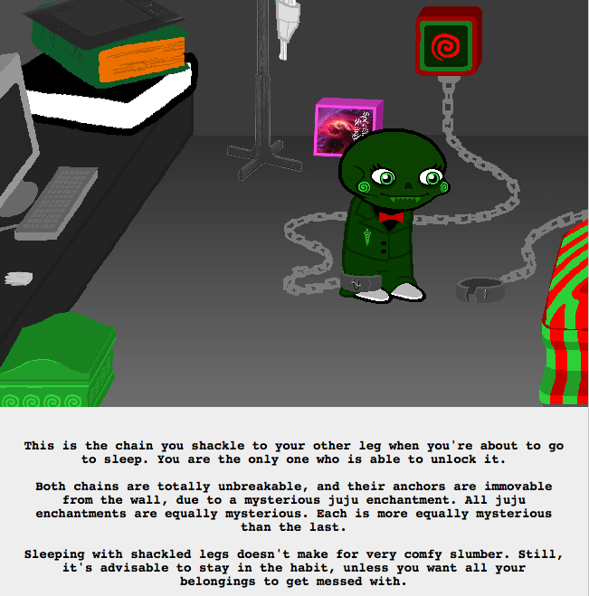

!!!!!!!!!!
That’s why Calmesis had the two chains! And why the chains have their symbols on them, Calliope unlocks one, to keep uu chained up, and uu unlocks the other, to keep Calliope chained.
So, now I’m going with: two dream selves, one waking body.